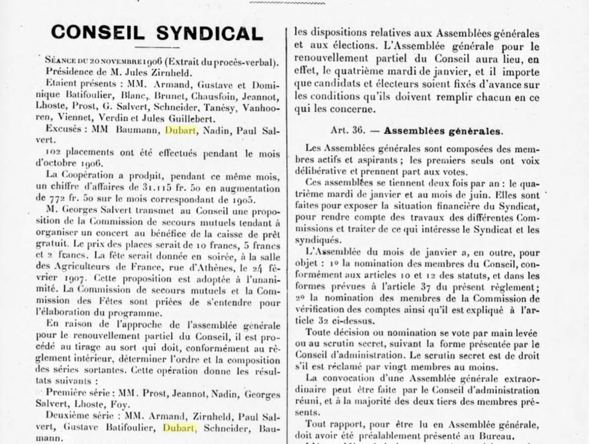

Presse · 15/12/1906 (séance du 20/11/1906)
« L'Employé » (Paris), numéro du 15 décembre 1906 : « Conseil syndical — Séance du 20 novembre 1906 », société « Les Petits Carreaux » (concours de tir, p. 188), annonce « L'Avenir Mutuel »
Ce document établit
- Dans une annonce de « L'Avenir Mutuel, société française d'assurances mutuelles sur la vie » (décret présidentiel du 5 décembre 1902 ; siège administratif 45 rue du Faubourg-Montmartre), publiée dans L'Employé du 15 décembre 1906, on lit : « Pour tous renseignements gratuits et notices, s'adresser à M. DUBART, 28, boulevard Bonne-Nouvelle, ou au siège du Syndicat. » vérifié A0934
« Pour tous renseignements gratuits et notices s'adresser à M. DUBART, 28, boulevard Bonne-Nouvelle, ou au siège du Syndicat. » (lecture incertaine : non)
- Hypothèse de rôle : en décembre 1906, Léon DUBART serait correspondant, agent ou démarcheur de L'Avenir Mutuel, société d'assurances mutuelles sur la vie, auprès des syndiqués ; cela concorderait avec la note de l'arbre « inspecteur d'assurances » en 1911 (AR0019, non vérifié). non vérifié A0935
« s'adresser à M. DUBART, 28, boulevard Bonne-Nouvelle, ou au siège du Syndicat » (lecture incertaine : non)
- Dans L'Employé du 15 décembre 1906, les résultats du concours de tir de la société « Les Petits Carreaux » (société de tir « Les Petits Carreaux », siège social 14 rue des Petits-Carreaux, soutenue par le Conseil syndical selon l'article : « le Conseil syndical de son dévoué concours ») donnent : « Fusil Lebel (hommes), 1er prix, M. Pastourelle ; 2e prix, M. Genat ; 3e prix, M. Barral ; 4e prix, M. Beaud ; 5e prix, M. Dubart ; 6e prix, M. Fernande » et « Revolver (hommes), 1er prix, M. Dubart ; 2e prix, M. Croze ; 3e prix ex-æquo, MM. Genat et Gombault ». non vérifié A0936
« Fusil Lebel (hommes) … 5e prix, M. Dubart ; … Revolver (hommes), 1er prix, M. Dubart ; 2e prix, M. Croze » (lecture incertaine : non)
- Dans L'Employé du 15 décembre 1906, le procès-verbal du Conseil syndical du 20 novembre 1906 (présidence de Jules Zirnheld) donne : « Excusés : MM Baumann, Dubart, Nadin, Paul Salvert » et, au tirage au sort des séries sortantes en vue du renouvellement partiel du Conseil, « Deuxième série : MM. Armand, Zirnheld, Paul Salvert, Gustave Batifoulier, Dubart, Schneider, Baumann ». non vérifié A0937
« Excusés : MM Baumann, Dubart, Nadin, Paul Salvert ; Deuxième série : MM. Armand, Zirnheld, Paul Salvert, Gustave Batifoulier, Dubart, Schneider, Baumann. » (lecture incertaine : non)
- Contexte de la source (non assertion sur Léon) : L'Employé du 15 décembre 1906 rapporte (1) 102 placements effectués par le Syndicat en octobre 1906 et un chiffre d'affaires de la coopération de 31.115 fr. 50 (en hausse de 772 fr. 50 sur octobre 1905) ; (2) le projet d'un concert au bénéfice de la caisse de prêt gratuit, le 24 février 1907, salle des Agriculteurs de France, rue d'Athènes ; (3) l'extrait du règlement intérieur, art. 36 (assemblées générales le quatrième mardi de janvier et en juin) ; (4) les souscriptions de la société L'Avenir Mutuel : 3.036.800 fr. en 1903 (13 mois), 6.356.400 en 1904, 10.488.400 en 1905, 15.000.000 au 30/09/1906 (chiffres de l'annonce, non contrôlés). vérifié A0938
« 102 placements ont été effectués pendant le mois d'octobre 1906 ; Souscriptions réalisées : 1903 (13 mois) 3.036.800 francs … Au 30 septembre 1906 15.000.000 » (lecture incertaine : non)
- Le « M. DUBART, 28, boulevard Bonne-Nouvelle » de l'annonce de L'Avenir Mutuel (L'Employé, 15/12/1906 ; A0934) est probablement Léon DUBART (P5227), qui déclare le même domicile sur sa feuille matricule (« Paris, 28 Boul^d Bonne-Nouvelle », colonne D/R : « R » ; date du tableau lue « 11 avril 04 ») et en 1922-1923 (A0453, A0459). partiellement vérifié A0953
« Pour tous renseignements gratuits et notices s'adresser à M. DUBART, 28, boulevard Bonne-Nouvelle, ou au siège du Syndicat. » (lecture incertaine : non)
Transcription
recherches/generation-3/leon-apres-1900/l-employe/transcriptions.md
Personnes concernées
Cinq captures d'écran de Jessica ; date du numéro donnée par Jessica ; adresse Gallica non relevée ; prénom de Dubart jamais donné ; nom surligné sur les captures. Toutes les captures ont été relues sur l'image.
Continuer
Toutes les archives →Document précédent« L'Employé » (Paris), numéro du 25 février 1906 : « Courrier du Syndicat — Conseil syndical » (séances des 16 et 30 janvier 1906) et commissions pour 1906 (p. 25)25/02/1906 (séances des 16/01 et 30/01/1906)Document suivant« L'Employé » (Paris), numéro du 6 décembre 1908, rubrique « Demandes d'emplois » : liste des camarades qui ont procuré des places1908-12-06 (date donnée par Jessica)